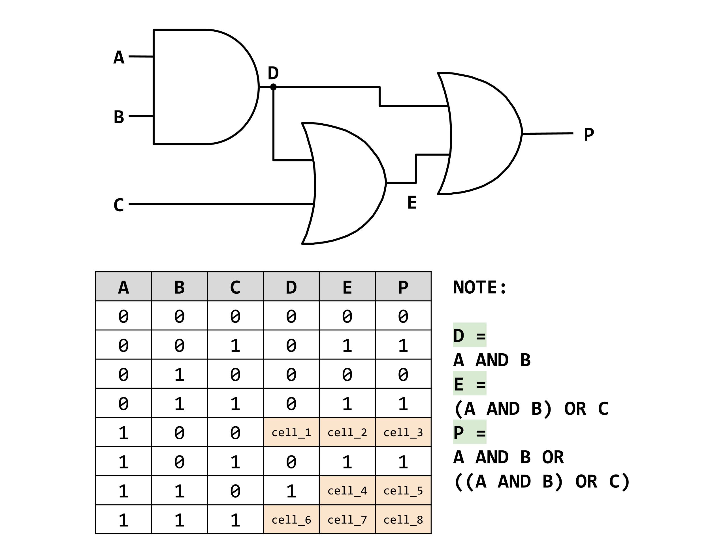

mrahmedcomputing
KS3, GCSE, A-Level Computing Resources
Lesson 6. Binary Logic
Lesson Objective
- Be able to identify OR, AND and NOT Logic Gates.
- Be able to create Truth Tables for a Logic Circuits.
Lesson Resources
Lesson Quiz
Lesson Presentation
Select the presentation, the press "f11" to enter full screen mode
Lesson Notes
Binary Logic?
Electronic circuits that perform Binary functions are called logic gates. Logic Gates form the basis of all logic circuits.
- A high voltage represents one state, logic 1
- A low voltage represents the other state, logic 0
Logic Gates represent Boolean Equations. Each Boolean function is represented by a different symbol.
Truth Tables
A truth table shows the results of Boolean equation from all possible combinations of inputs. They are used to show all possible outcomes from Boolean equations and logic gate diagrams. The truth table and logic gate symbol for show on the right of the screen. Or below on mobile browsers.
AND Gate
For an AND Gate the output is TRUE only if ALL inputs are TRUE.
Boolean Algebra Notation:
- Z = A ∧ B
- Z = A . B
- Z = A AND B
- Z = AB
| A | B | Z |
|---|---|---|
| 0 | 0 | 0 |
| 0 | 1 | 0 |
| 1 | 0 | 0 |
| 1 | 1 | 1 |
OR Gate
For an OR Gate the output is TRUE if EITHER/ALL inputs are TRUE.
Boolean Algebra Notation:
- Z = A ∨ B
- Z = A + B
- Z = A OR B
| A | B | Z |
|---|---|---|
| 0 | 0 | 0 |
| 0 | 1 | 1 |
| 1 | 0 | 1 |
| 1 | 1 | 1 |
NOT Gate
For a NOT Gate the output is the OPPOSITE (inverse) of the input.
Boolean Algebra Notation:
- Z = ¬A
- Z = Ā
- Z = NOT(A)
- Z = A'
| A | Z |
|---|---|
| 0 | 1 |
| 1 | 0 |
XOR Gate
For an XOR Gate the output is TRUE if only ONE input is TRUE.
Boolean Algebra Notation:
- Z = A ⊻ B
- Z = A ⊕ B
- Z = A XOR B
| A | B | Z |
|---|---|---|
| 0 | 0 | 0 |
| 0 | 1 | 1 |
| 1 | 0 | 1 |
| 1 | 1 | 0 |
Logic Circuits
Identifing Expressions and Complteting a Truth Table
The output expressions have been labelled and noted in the diagram.
- Cell 1 is the result of A(1) and B(0) going into an AND gate. As both inputs are not TRUE the output (Cell_1) will be FALSE(0).
- Cell 2 is the result of D(0) and C(0) going into an OR gate. As both inputs are FALSE so the output (Cell_2) will be FALSE(0).
- Cell 3 is the result of D(0) and E(0) going into an OR gate. As both inputs are FALSE so the output (Cell_3) will be FALSE(0).
Can you work out the outputs for the remaining cells?